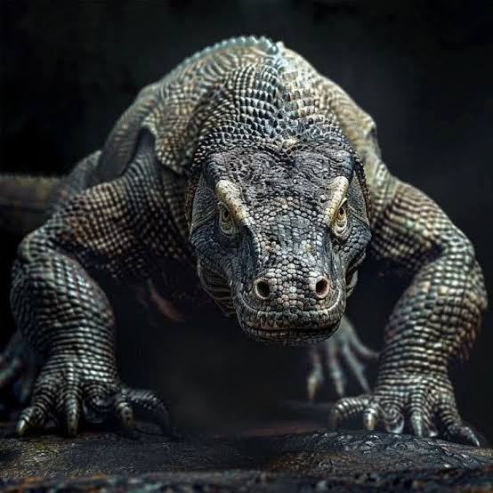

The Komodo Dragon

The Komodo dragon is the largest living lizard on Earth, reaching up to 3 meters in length and weighing up to 70 kilograms. It lives in the islands of Indonesia and is a powerful predator that relies on its keen sense of smell and venomous bite to subdue its prey.